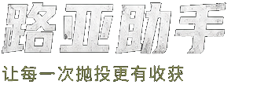
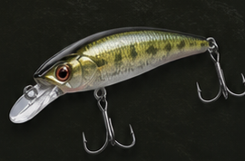

多云
20~28°C

deployed_code
钓鱼指数
86 适宜
今日钓况评分
info
86
分
/100
/100
非常适合出钓
东南风 2级
气压 1008 hPa
湿度 68%
数据源 待定位
水温估算 24.6°C
适宜窗口 6-10时
deployed_code 今日推荐方案

phishing
推荐拟饵
米诺 (Minnow)
110SP
palette
推荐颜色
自然色系
银黑背
business_center
推荐重量
10 ~ 14g
按风力调整
monitoring
推荐泳姿
快慢结合抽停
抽2-3下 停1-2秒